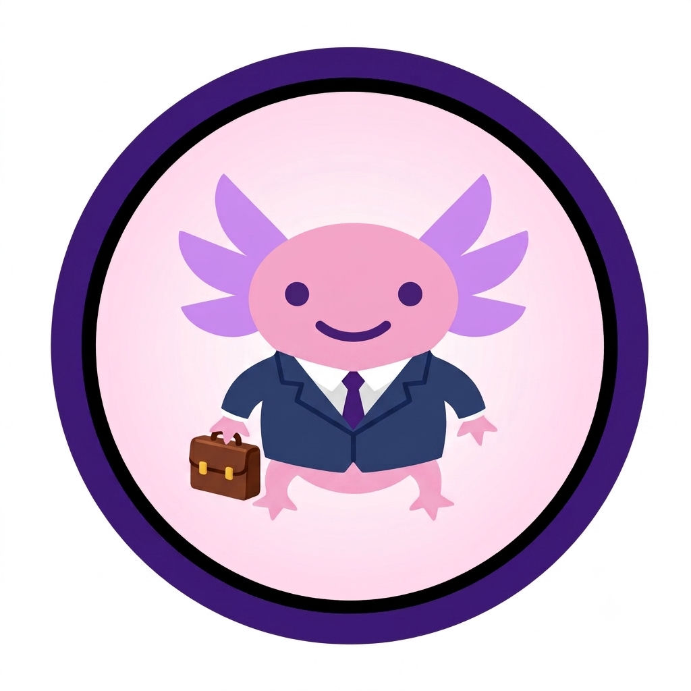

Prospects
Filter by city, see which shifts actually fit, apply, and keep tabs on status. Message Recruiters, Express interest in a workplace, and ask them to verify jobs you’ve done.

Axol Work.Shift work that starts with how you actually work. Tell us what you need once. Browse open shifts sorted by fit. Apply, message, and build a network without the usual guessing game.
On most boards, accommodations are buried, if they show up at all. Here, Prospects pick their needs during onboarding and choose whether to keep them private or share them on their profile. Recruiters tag each shift with what they can offer—and can earn an Inclusive hiring badge when they both offer workplace supports and commit to hiring disabled and neurodivergent workers. Your home feed sorts by overlap either way, so you see a badge like 3 of 4 needs met before you even open the listing.
Looking for shifts, or looking to hire? Same app, different lanes.
Filter by city, see which shifts actually fit, apply, and keep tabs on status. Message Recruiters, Express interest in a workplace, and ask them to verify jobs you’ve done.
Post shifts with pay, hours, city, and accommodation tags. Review everyone who applied in one place. Scout Prospects you like, mark shifts complete, and confirm work-history requests.
We don’t say “Connect.” Recruiters Scout. Prospects Express interest. Peers Reach out. Once someone accepts, you’re in each other’s network, with chat, a community feed, groups, and a Mentorship page for people who share your experience tags.
A short path from signup to a shift you can actually do.
Pick your experience, city, availability, and needs: quiet space, seated breaks, written instructions, flexible starts, predictable routines, lifting limits. Your needs drive the fit ranking.
Open shifts rise to the top when they cover more of your needs. You’ll see badges like 3 of 4 needs met. Above the feed, Inclusive employers highlight Recruiters who offer supports and want to hire you—not only companies with open listings.
Open a shift, read it, apply. Watch status move from submitted to viewed, accepted, or declined. Pull an application while it’s still submitted, or message the Recruiter anytime.
Add a past job and ask that Recruiter to confirm it. Once they do, you get a Verified badge, and you can leave a short, tag-based review of the workplace.
Company page, shifts, applicants, and verification, all in the browser.
Add your company name, address, and workplace supports (headphones, seated stations, structured training). Opt in to inclusive hiring if you actively want to hire disabled and neurodivergent workers. Each shift also gets its own accommodation tags—those are what Prospects match on.
See who applied across all your shifts. Open a profile, Scout them, message them, accept or decline. Accepting fills the shift; marking it complete logs hours.
When a Prospect asks you to verify a job, you’ll see it on the Company page. Confirming gives them a Verified badge and lets them review you.
Verified workers leave tags like “accommodations honored” or “pay was on time,” plus an optional note. Reviews show on your public profile and Company page.
Work is the point. The network is how careers actually grow: scouting, chat, posts, and groups in the same place.
Recruiters Scout Prospects. Prospects Express interest in Recruiters. Peers Reach out. While you wait, the button shows Scouted · Pending or Interest sent · Pending. Chat has unread dots, read receipts, and emoji reactions.
Post for everyone or just your network. Start or join a group with its own discussion. Mentorship surfaces people who share your experience tags so you can Reach out.
We build toward WCAG 2.1 AA because this audience deserves an app that works with them, not around them.
Clear structure, visible focus, skip-to-content, and live updates for messages and notifications. Status isn’t color-only. Text and icons travel together.
Pick a theme, or start from your system preference. Big hit targets. Layouts that still make sense when you zoom in.
If you prefer reduced motion, we respect that. Buttons stay large enough to hit without precision.
Your email stays off your public profile. Block, report, control who sees your posts, and delete your account from Settings if you need to leave.
It’s free. Sign up with email and password, pick Prospect or Recruiter (you only choose once), finish a short onboarding, and you’re in.
Browse the full app as a Prospect or Recruiter. Applying, posting, and messaging need a free account.
We usually reply within a couple of business days.